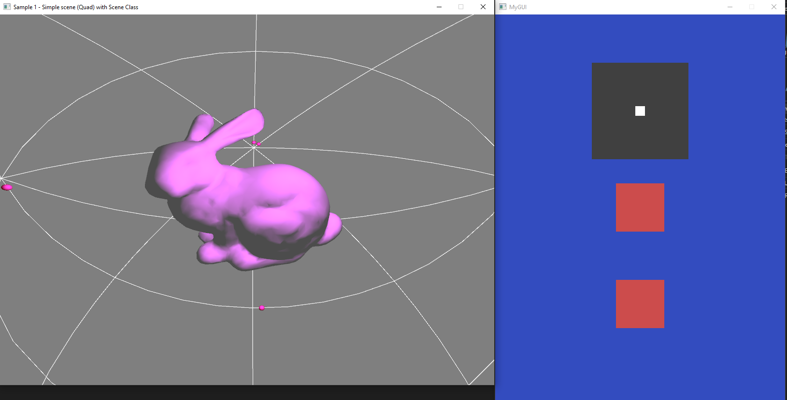
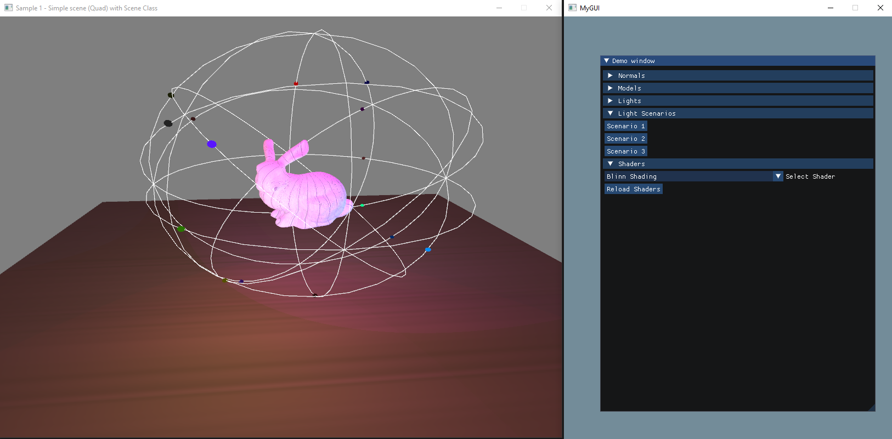
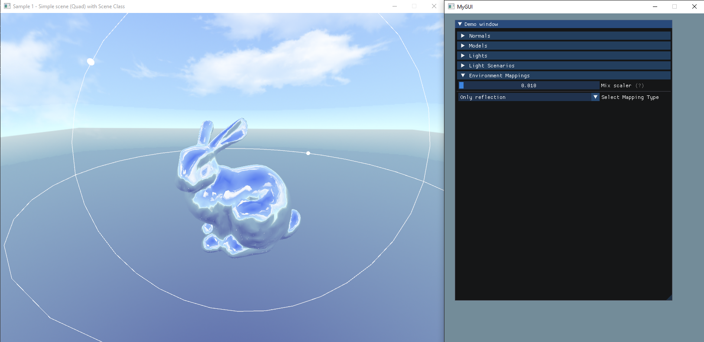

CS300 Project
In Digipen Junior year, I've made my advanced 3D graphic engine which is written in OpenGL.
The first milestone, I implemented obj file loader, and my GUI. In the picture, the engine successfully loads a rabbit model. Static lighting is applied. Furthermore, I implemented my custom graphic user interface(GUI). It can rotate the imported model, toggle visibility of normals of the model.
The second milestone, I implemented three shaders and applied dynamic lightings.
I implemented Phong Lighting, Phong Shading, and Blinn Shading.
Phong Lighting calculates diffuse and specular colors by calculating reflection vector(which has expensive costs) in vertex shader. They are occured in vertex shader. Phong Shading is technically the same with Phong Lighting, but lighting calculations are processed in fragment shader. Blinn Shading used half vector instead of reflection vector in fragment shader.
I used uniform block to send lighting information to GPU.
The third milestone, the engine is able to represent reflection, and refraction.
I implemented frame buffer objects to capture in-game textures, and use it to represent reflection, and refraction.

Furthermore, I used Fresnel approximation(Schlick's method) to combine reflection, and refraction together.

The fourth milestone, I improve object loader, and implement deferred rendering.
Now object loader used Assimp to load assets. Thus, the engine does not restrict assets file format as long as Assimp supports.
The picture above represents deferred rendering. Four small images of the main window represented position, UV, normal, distance from camera(left to right). Deferred rendering renders all objects first and produces image such like the four images in first pass. After then, combine the four images together using lighting information in second pass. Lighting calculations are done in only second pass. It enhanced rendering time. Reduced time by deferred rendering increases if there are many objects, and lights. Cons of deferred rendering are increased memory usage by G-buffer, and it needs more work to support multiple materials and transparency.